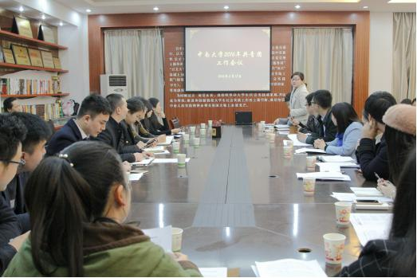

中南大学高文兵书记深入永州市江华县调研定点扶贫工作
【导读】3月19-20日，中南大学校党委书记高文兵、常务副校长黄健柏一行，在永州市委副书记唐松成陪同下，深入我校定点扶贫地区永州市江华瑶族自治县进行考察调研。
3月19-20日，中南大学校党委书记高文兵、常务副校长黄健柏一行，在永州市委副书记唐松成陪同下，深入我校定点扶贫地区永州市江华瑶族自治县进行考察调研。
在江华期间，高书记一行实地考察了江华经济技术开发区、江华县高新技术矿冶循环经济产业园、县城园林城市建设及涔天河水库扩建工程等，对该县的县情进行了初步了解，并与江华县委、政府召开江华经济社会发展暨扶贫工作座谈会。座谈会上，江华县有关负责同志汇报了该县近几年经济社会发展和扶贫工作情况，黄健柏 常务副校长介绍了我校的基本情况及近年来取得的成果。

省扶贫办社会扶贫处处长邹序树，永州市委副秘书长林遵槐，市扶贫办主任龚文生，江华瑶族自治县委书记罗建华、县长龙飞凤等陪同调研。校党委常委、组织部部 长韩清波，学校办公室、科研部、本科生院、湘雅三医院、商学院、地球科学与信息物理学院、建筑与艺术学院等单位负责人参加调研。
据悉，我校将结合自身优势开展七项帮扶工作：一是协助江华县申报湖南省特色县域经济重点县；二是每年申请一定名额的预科生给江华县少数民族考生，列入国家 招生计划；三是在江华选定一所中学作为我校的“优秀生源基地中学”；四是在江华建立中南大学实践基地，为学校培养锻炼年轻教师及后备干部；五是加强产业扶贫，发挥学校科研优势和技术优势，与江华县实行校地合作，形成优势互补的战略合作伙伴；六是在江华确定一个贫困村，进行结对帮扶；七是对江华县医院进行帮扶，每年接受江华县选派的在职医生到我校学习进修。
3月18日下午，校团委2016年工作会议暨“情系江华·赢在中南”大学生农村电商创业实战工作会议在校本部图书馆二楼艺术馆召开。校团委全体成员、各二级学院分团委书记参加了本次会议。
童卡娜副书记介绍了对团委管理的学生活动场地的相关整改措施，如场地租赁由押金制转为证件抵押制等，并希望二级学院多提意见，共同维护好校园文化建设的公共设施。王超副书记紧接着就五四表彰评比方案修改、研究生团支部工作的推进以及选拔优秀团队参加第一届湖南省青年志愿服务大赛进行相关说明。他特别谈到在研究生团建工作方面，将开展团支部书记培训、团支部示范项目立项、示范团支部评选等活动来推进研究生团建活力工程。
刘正宗副书记对“情系江华·赢在中南”大学生农村电商创业实战进行专门的工作部署。他介绍道：“校团委将采取立项资金支持与竞赛激励的方式，鼓励大学生创业团队赶赴江华县开展多种形式的创业活动，通过学生的创业和实践热情来带动当地经济的发展。”据悉，校团委将在4月中下旬组织各立项团队开展农村电商创业实战挑战赛，通过自我展示和现场答辩的形式对各团队进行考核，表现优秀的团队予以追加经费支持。各学院学生参与情况以及竞赛情况将作为考核指标之一，计入学院团委的年度工作考核中。
“如果能让大学暑期生活更加丰富精彩，你是否愿意将暑假上网、游戏、玩手机的时间投入到志愿服务上来?”20：00， 晚会在中南文化艺术团的新民乐《青春组合》演奏中拉开了帷幕，张扬着年轻活力，在昏暗的灯光效果下，将现场气氛一瞬间点燃。尖 叫、欢呼、口哨声充斥着整个会场。紧接着，《美丽心情》与《江南style》优美翩跹、娴熟的舞步配合真挚的情感，再加上来自微尘爱心协会的手语表演，使得现场掌声不断。琴韵悠扬、晓风残月，由粉冶院青志协和校青志协分别带来的双人舞《藤枝叶》则将现场观众带入了另一个空灵纯净的世界。夸张的动作，迥异的曲风，由该校老师带来的小品《明星模仿秀》无疑把晚会推向了高潮。此外，来自大瑶山原生态的歌舞2013年获得中国“群英奖”的《下河嗓子—放排歌》与江华民族歌舞团赵世宜独唱的《大瑶山放歌》点缀其间，更是将全场观众从一个现代都市领入到原生态瑶族生态园交相辉映的美丽新世界。无厘头的表演方式和意想不到的拼凑伴乐，将青志协的青春与幽默展现得淋漓尽致。最后，晚会在中南艺术团的歌舞《节日欢歌》中圆满结束。
“明年暑期我一定再来江华开展志愿服务，带领学妹学弟们一起做这些筑梦瑶山有意义的事情。”中南大学湘雅医学院12级本次晚会的节目主持人曹蕾说早就听说过学校定点扶贫江华的国务院部署，今年是第一次有机会暑期近距离志愿服务江华。“今天的晚会将暑期支教活动圆满结束，在大瑶山十天的志愿活动中我深受感动和启发。在剩余不多的大学时光里，如果有机会，我会将更多的时间投入到扶贫江华的志愿者工作上来。”7月22日晚，“情系江华 筑梦瑶都”2014年中南大学“四进江华”志愿服务活动专场文艺晚会在江华瑶族图腾园文化广场拉开序幕，近千名瑶族干群和志愿服务的数百名中南师生现场观看。